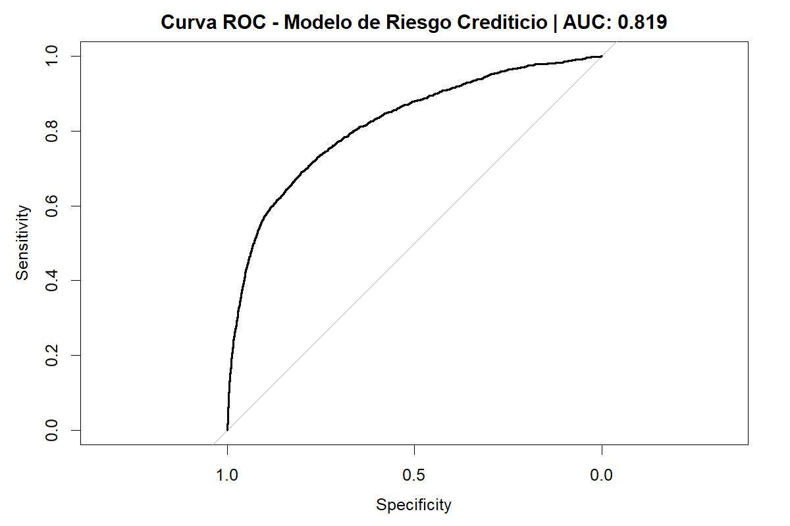
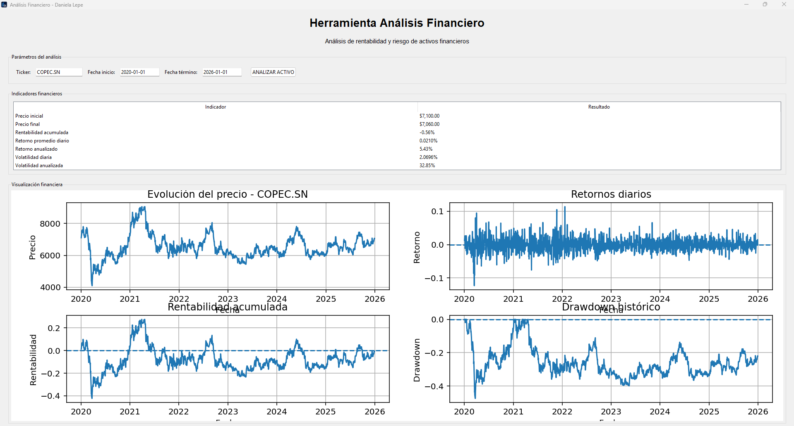

Control de Gestión · Análisis Financiero · Data Analytics
Ingeniera en Control de Gestión con experiencia en gestión administrativa, control y análisis de ingresos, cobranzas, ventas, compras, remuneraciones y seguimiento de resultados.
Actualmente complemento mi formación con un Diplomado en Ciencia de Datos para las Finanzas en la Universidad de Chile, fortaleciendo mi perfil en análisis de datos aplicado a la gestión y las finanzas.
Desarrollo de un modelo analítico en R orientado a estimar la probabilidad de que un cliente presente dificultades financieras y generar información de apoyo para la toma de decisiones crediticias.

El modelo permite estimar el riesgo crediticio de nuevos clientes y apoyar su clasificación a partir de datos financieros. La evaluación mediante la curva ROC obtuvo un AUC de 0,8185, mostrando una buena capacidad para diferenciar entre clientes con distintos niveles de riesgo.
Aplicación desarrollada en Python para analizar activos financieros a partir de datos históricos. Permite calcular indicadores de rentabilidad y riesgo, incluyendo volatilidad, VaR histórico y Drawdown, además de visualizar la evolución del activo y clasificar su nivel de riesgo.

La herramienta integra análisis financiero y programación para evaluar el comportamiento de activos a partir de datos históricos. Permite visualizar su evolución y analizar indicadores de rentabilidad y riesgo, facilitando la interpretación de información financiera para apoyar la toma de decisiones.
Diplomado en Ciencia de Datos para las Finanzas
Universidad de Chile — FEN | 2026 · En curso
Ingeniería en Control de Gestión
Universidad Santo Tomás | 2021 – 2024
Técnico en Gestión de Recursos Humanos
CFT ProAndes | 2016 – 2018